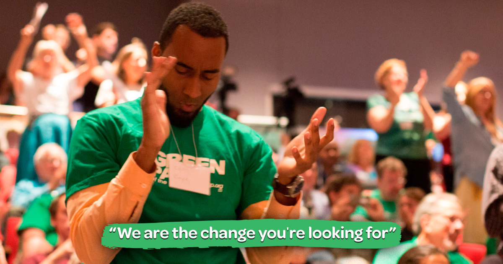
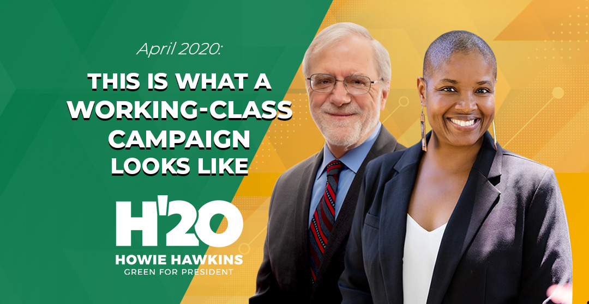

Who We Are
The Green Party of the United States is a grassroots national party. We're the party for "We The People," the health of our planet, and future generations instead of the One Percent. We welcome all those who refuse to accept a choice limited to the Two Parties of War and Wall Street.We are an independent political party that is connected to American social movements, and is part of a global Green movement that shares key values, including our Four Pillars: Peace and Non-Violence, Ecological Wisdom, Grassroots Democracy, and Social Justice, and our Ten Key Values. Currently we have more than 100 elected officials around the country, mostly at the municipal level, working to enact Green policies. We run many candidates who put Green issues on the table in elections at every level. We don’t take corporate money. We are working to build clean government that works for all of us – not just the 1%. We are fighting for the future.

A Brief History
The Green Party is now in its fourth decade. Founded in 1984, the party has run a national ticket in every presidential election since 1996. In 2000, nominee Ralph Nader received nearly three million votes; in 2012, Jill Stein received the most votes for a woman in a presidential election in U.S. history. There have also been hundreds of Greens elected across the nation, from state legislatures and mayors down to local zoning boards.In May 1984, when progressive politics in the United States was fighting for survival, a Green Movement Committee was founded with the goal of “the formation of a Green political organization in the USA.” The committee declared, “To be effective, a Green political organization must originate from a broad base of support, from natural allies concerned with ecological politics and social justice, peace and non-violence, local and regional self-management and grassroots democracy.” That summer, the founding meeting of U.S. Greens took place in St. Paul, Minnesota.
While the Green movement was just sprouting in America, it was taking root in West Germany. The U.S. Greens were inspired by the Four Pillars of the West German Greens: ecology, social justice, grassroots democracy, and non-violence. They also decided that, in the spirit of grassroots activism and democracy, the emerging party would go from the ground up, with local and state organizations having the most important role.
Hawkins & Walker 2020
The candidates for the presidential term of 2020 of the Green Party are: Howie Hawkins and Angela Walker. They represent and work for the Green Party values which also includes: Medicare for all, Covid-19 Relief, the Green New Deal, community control of the police, sustainable agriculture and food systems, an economic bill of rights to guarantee a living-wage job for all, ending endless wars, and ending the war on drugs.Howie Hawkins
A retired Teamster, Howie Hawkins is the original Green New Dealer, the first US candidate to campaign for a Green New Deal in 2010. Howie is also one of the original Greens in the United States, having participated in the first national meeting to organize a US Green Party in St. Paul, Minnesota in August 1984. As the Green Party’s candidate for governor of New York in 2010, 2014, and 2018, each time he received enough votes to qualify the Green Party for a ballot line for the next four years. Outside of electoral politics, Howie has been a constant organizer in peace, justice, union, and environmental campaigns.Angela Walker
Angela Walker is a veteran working-class activist with decades of experience working for racial and economic justice in social movements, unions, and as an independent socialist candidate from her youth. She was born and raised in Milwaukee, Wisconsin to a working-class Black family. She learned early that though money was necessary to live in this society, it was less important than integrity, cooperation, and dignity. This upbringing shaped the activist and organizer she later became. Angela is the mother of one, and the grandmother of five. She is a fierce advocate for the rights of Black, Brown and Indigenous people, the LGBTQIA community, Labor and the Earth itself.